- Former NASA Astronaut
- New York Times Bestselling Author
- Columbia University Professor
- Recurring role as himself on The Big Bang Theory
- Expert commentator on network and cable news programs
- Media Personality
- First person to Tweet from space
- MIT Ph.D.
“Change is Inevitable, Accept and Embrace It.”
Speaks about...
- Teamwork & Team Building
- Leadership
- Motivation
- Resiliency
- Innovation & Problem Solving
- Overcoming Obstacles & Challenges
- Adapting to Organizational Change
- Incorporating AI in the workplace
- Building Trust in Your Organization
- Safety
- The Business of Commercial Spaceflight
Mike Massimino is a four-time spacewalker on two missions to the Hubble Space Telescope, including the final Hubble servicing mission which has been called the most dangerous and complex mission in space shuttle history. But he is more than an astronaut – he is a recurring character on The Big Bang Theory, a bestselling author, an engineering professor, an MIT Ph.D, and a popular guest on news and late-night television programs. Mike uses humor and his unique storytelling ability to inspire audiences to identify the passion in their work, use teamwork and innovation to solve problems, provide leadership in the face of adversity and change, and never give up when pursuing a goal. Mike has written 3 books including his NY Times Bestselling memoir Spaceman, and his most recent book Moonshot: A NASA Astronaut’s Guide to Achieving the Impossible which distills stories and insights from NASA into an actionable guide for success in business and in life. Mike is clear, “We all have our own personal “moon shots” we’d like to take in life, but as mission control will tell you, doing one big thing really means getting a thousand little things right along the way.”
Mike never gives the same talk twice, and enjoys working with each client to craft a talk that will include stories that will hit the mark for their event. Find a few examples of past topics below.
Be Ready for the Future
Change is inevitable, accept and embrace it
Companies go through reorganizations and changes to grow their business and prepare for future opportunities in the changing marketplace. Often these transformations are met with resistance by team members who are happy with the way things are, but leadership needs to clearly communicate the benefits of these changes to gain buy-in. Mike relates changes in the space program to changes in today’s business world. During his career, NASA pivoted from working independently to embarking on global partnerships with the space faring countries of the world including Russia, and commercial partnerships with private space companies. Leadership made it clear that although many would be uncomfortable with these changes, they were needed to secure the future of space exploration, improve international relations, and stimulate a new space economy. Mike encourages audiences that although they may have an initial reluctance to accept change, they should embrace it as an opportunity for future greatness and success.
Being Resilient and Adaptable in Challenging Times
When you think all hope is lost, find another way around
Sometimes forces out of our control can make moving forward difficult. In spite of our best efforts we often get knocked down repeatedly. But we need to find a way around that next obstacle. Mike encourages audiences: When the odds are against you, do it anyway. Mike’s dream of becoming an astronaut began when he was six years old watching Neil Armstrong take the first steps on the moon. The path to achieving this dream was wrought with unexpected challenges, failures, disappointments, and self-doubt. Mike was rejected three times by NASA including a medical disqualification which Mike overcame by teaching his eyes and brain to “see better.” His persistence paid off when he was selected to be an astronaut on his fourth try. This same resilience was needed after earning his astronaut wings to persevere through the setbacks, tragedies, and technical challenges that Mike experienced in his astronaut career. Mike stresses that as long as you keep trying, no matter the obstacles, achieving a goal is possible.
The Team’s Success is Your Success
You cannot do this alone, you will succeed or fail as a team
An organization’s goals are only obtainable if everyone on the team works together. Individual accomplishments are needed, but the success of the team is most important. In our complex world, not everyone can be good at everything. But by pooling our abilities, we can be good at everything as a team. Mike conveys how he and his colleagues worked together with a culture of admitting mistakes and bringing forward concerns without worry of embarrassment or finger pointing. Providing help to teammates was not considered to be a burden, but rather a way to make the team stronger. When Mike broke a critical piece of equipment while repairing the Hubble Space Telescope during his final spacewalk, his team was there to help. Rather than blaming Mike, the ground control team and the astronauts in space worked together with him to come up with an innovative solution that saved the day and the mission. Although not every problem has an obvious solution, teamwork can help us with overcoming unforeseen challenges. Mike communicates to audiences how the NASA models for teamwork and leadership can be applied to the business world and in life. When you need help, reach out to your own “Mission Control Center,” and be “Mission Control” for others.
Gaining that Competitive Edge
Accepting AI and new technology in the workplace
AI and new technology is all around us. It can be intimidating. But it can also provide opportunities for growth and improve our decision making. The Space Shuttle was a manually controlled spacecraft. Very little computing power was available and astronauts and flight controllers were responsible for operations and decision making during high stakes situations. In today’s spaceships, AI performs many of the decision making tasks previously done by astronauts. But the path getting there was not easy as astronauts were accustomed to being in total control of their spacecraft. The road to acceptance was through demonstrated benefits such as increased safety, improved performance, and reduced training time. Mike encourages audiences to embrace new technologies and AI to give them the competitive edge they need in meeting the challenges of a dynamic and uncertain world.
Innovating for an Uncharted Future
Make your workplace a laboratory where everyone has a voice
In the challenging world in which we live and work, the problems we face are complex. Growing our businesses in an uncharted future requires innovation. Mike found that innovation at NASA came through diversity of thought, and everyone having a voice. If everyone thought the same way we would have never landed on the moon. To prepare for their spacewalks, Mike and his team trained in the largest pool in the world - The Neutral Buoyancy Laboratory. At first Mike was confused as to why the facility was called a “laboratory.” A more appropriate name seemed to be “really big pool.” But after time, Mike realized that it was a laboratory - a place where innovative ideas would be put forward and tested. During a training session, if the team could figure out a way to save even one minute of spacewalking time it would be a significant accomplishment. And everyone had a voice, including the new people. Not all ideas were good, but leadership never crushed those ideas. They responded with “thank you” and “keep bringing ideas forward.” Because once you crush an idea, the person is likely to stay silent in the future, and the team will not get the useful idea when it eventually comes. Mike is clear: innovation is only possible when a diverse group of people exchange ideas and everyone has a voice. Mike shares examples of how this approach worked when he was a rookie, and when he was the leader of a team trying to uncover innovative ways to meet current and future challenges in space.
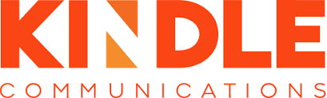
“It went absolutely amazing! He did a great job and the audience gave him a standing ovation. He is
wonderful and we would definitely love to have him as a keynote speaker again!”
Associate Producer, Kindle Communications
“Our leaders were inspired by your story and I believe walked away with a renewed sense of purpose and
ready to focus on our new aspiration and goal. Your determination has encouraged us to think differently
and be more courageous in our pursuits to impact society.”
CEO, Pfizer
“Thank you for the most relevant and spellbinding keynote speech I have ever seen; you've
inspired everyone today with your determination and life lessons.”
CEO, Cority Software
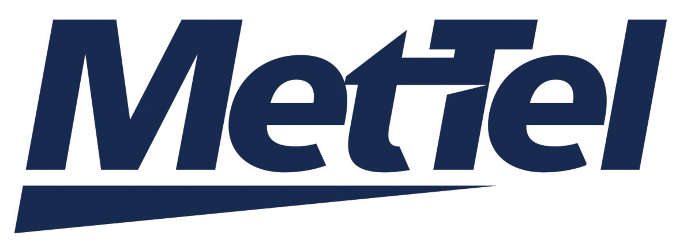
Mike delivered an inspiring and thought-provoking session titled "Private Space Travel and the Future of
Spaceflight." The timing couldn't have been more perfect, and the event was nothing short of
spectacular!
It was a privilege to share this fantastic experience with my amazing MetTel customers, who were equally
inspired and moved by Mike's words.”
Head of Corporate Communications, Mettel
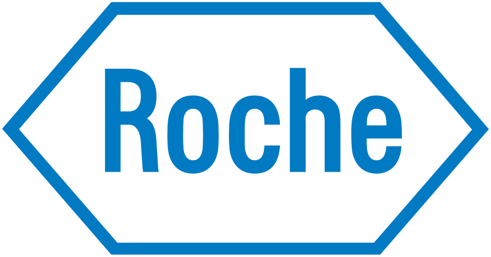
“Awesome, awe inspiring, brilliant speaker, incredible man. I learned so much, not just about
resilience. It was like a masterclass in leadership, humility and presenting all rolled into one
enthralling session.”
Organizational Change Management Lead, Roche Pharmaceuticals
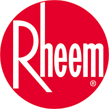
“Mike - thanks again for speaking at our meeting today. I can’t tell you how many people have come up to
me raving about your talk and reciting some of your stories. For me, I really appreciated not only that
you spent a big chunk of the day listening to some of our presentations but also wove them into your own
talk to reinforce your key messages. We could not have asked for a better keynote speaker to cap off the
day.”
Director, Marketing & Training
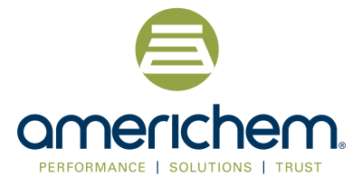
“Your openness and approachability, insightful perspective, and genuineness were valued by everyone in
attendance. I cannot underscore enough how much your personal experiences resonated and inspired those
on the team about the challenges (and opportunities) we face leading this business.”
CEO, Americhem
 "Amazing, you had all 300+ of us laughing, crying, and reflecting. A few quick pieces of feedback we got
after the 4-hour day of programming…
"Best speaker I've ever heard...and I've been at this company for 10 years"
"Really enjoyed the interview with Mike Massiminno. Absolutely incredible person to hear from"
On your favorite part of the day ... "Mike Massimino 100%"
“It was a pleasure to listen to the inspirational story of Mike’s journey and how he kept at it despite
multiple rejections. A lot to learn and ponder. Success doesn’t come at first attempt. Michael Massimino
- Respect!!!”
"Amazing, you had all 300+ of us laughing, crying, and reflecting. A few quick pieces of feedback we got
after the 4-hour day of programming…
"Best speaker I've ever heard...and I've been at this company for 10 years"
"Really enjoyed the interview with Mike Massiminno. Absolutely incredible person to hear from"
On your favorite part of the day ... "Mike Massimino 100%"
“It was a pleasure to listen to the inspirational story of Mike’s journey and how he kept at it despite
multiple rejections. A lot to learn and ponder. Success doesn’t come at first attempt. Michael Massimino
- Respect!!!”
Senior Director of Client Services
 “The team is still buzzing about your inspirational and engaging talk. You were a huge hit!
We look forward to including you in other events at Fidelity."
“The team is still buzzing about your inspirational and engaging talk. You were a huge hit!
We look forward to including you in other events at Fidelity."
President, Personal Investing, Fidelity Investments
“The feedback we got from the work you did at our meeting rated higher than anything we did, and
it wasn’t even close. The message you delivered – the tone of never giving up, team culture,
perseverance and overcoming challenges – still resonates this week in conversations I have had with my
people. “I used my 30 seconds, I got over it and we have to move on.” I can’t tell you how many times
I’ve heard that.”
Director of Business – The Americas, Cook Vascular
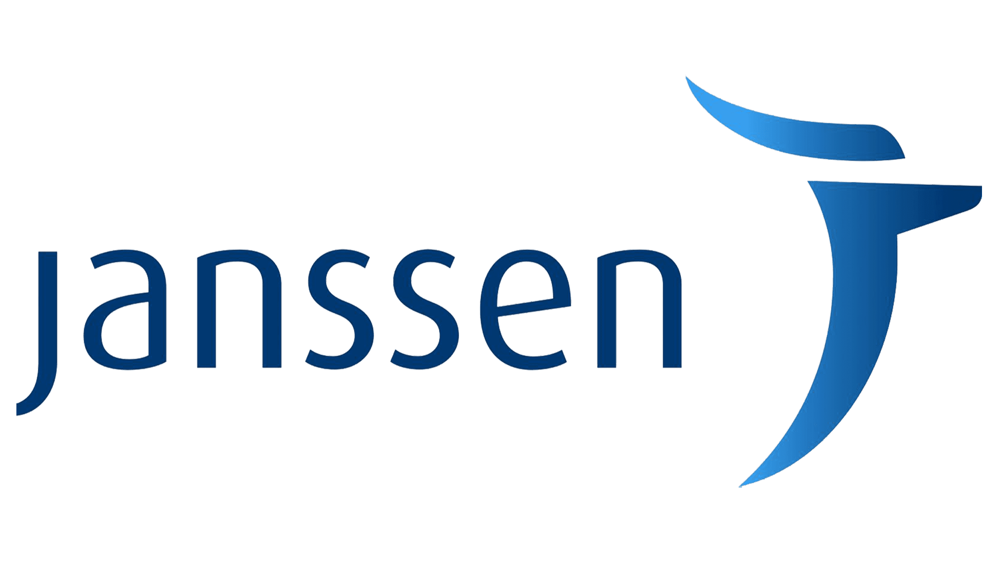
“It went absolutely amazing! He did a great job and the audience gave him a standing ovation. He is
wonderful and we would definitely love to have him as a keynote speaker again!”
Associate Producer at Kindle Communications
"We just wanted to say a big thank you for helping inspire our teams yesterday. All of those docs and
frontline team members (and executives!) are buzzing with smiles today and repeating your stories. And
thank you for taking the extra time to sign books and pose for pics. The messages that you deliver are
very applicable to the work we do in acute healthcare."
COO, Orlando Health
“Mike was amazing!! His talk was spot on. His delivery was totally engaging. An absolute delight. The
CEOs love him. We love him. We want more of Mass!!”
EVP, Global Strategy & Communications
“Your talk exceeded our expectations. The substance of what you shared was incredibly interesting –
fascinating details, great stories, relevant life experiences – and your demeanor was simply perfect for
that setting. You demonstrated high achievement/excellence with no arrogance so it made it all very
accessible to the team.
Plus, you were funny as heck. Here’s a sign of a good presentation – I’ve been thinking about some of
your stories the last few days.”
CEO, Wingspire Capital
 “OMG – he was awesome! Everyone loved him!! He stayed to sign books and I think all 300 people waited in
line to have him do so. We extended lunch by 30 minutes so that everyone could have a chance to meet
him, get their photos with him, and get their books signed. Mike is so genuine and so personable. He
mingled with everyone before and after his talk. He is truly fabulous. We’ll certainly recommend him to
other groups within the United Healthcare Group. We couldn’t have had a better motivator for our team.”
“OMG – he was awesome! Everyone loved him!! He stayed to sign books and I think all 300 people waited in
line to have him do so. We extended lunch by 30 minutes so that everyone could have a chance to meet
him, get their photos with him, and get their books signed. Mike is so genuine and so personable. He
mingled with everyone before and after his talk. He is truly fabulous. We’ll certainly recommend him to
other groups within the United Healthcare Group. We couldn’t have had a better motivator for our team.”
Corporate Communications, United Healthcare
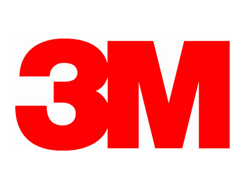
“The session went really well! We had almost 300 people from around the world tune in live for Mike's
presentation. He told a great story and wove in messages around not giving up on your dreams, teamwork,
working in isolation, and a lot of others. We have received extremely good feedback from participants,
unsolicited, around his story and message. I think it was a home run or a perfect lift off!"
Senior Technical Manager, 3M
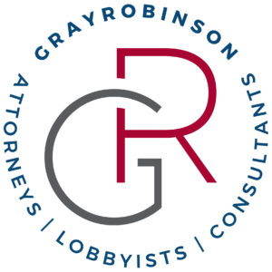
“Mike was absolutely phenomenal. His presentation was engaging and he hit on every point we discussed in
our planning calls. I have had several attendees come up to me to tell me that he is the best speaker
they have ever heard. He also spent so much time after his keynote talking to our attendees and taking
photos, so I truly appreciate him going the extra mile for us. I am truly not exaggerating when I tell
you that he was the highlight of our retreat and every single person I have spoken to has commented on
what an outstanding job he did.”
Events Manager, GrayRobinson
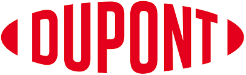
“Thank You on behalf of all my DuPont colleagues who created, developed, and hosted the Emerging
Leaders Conference. Your professionalism, sincerity, heartfelt connection with our emerging leaders
resonated beyond belief.”
Senior Producer, Dupont
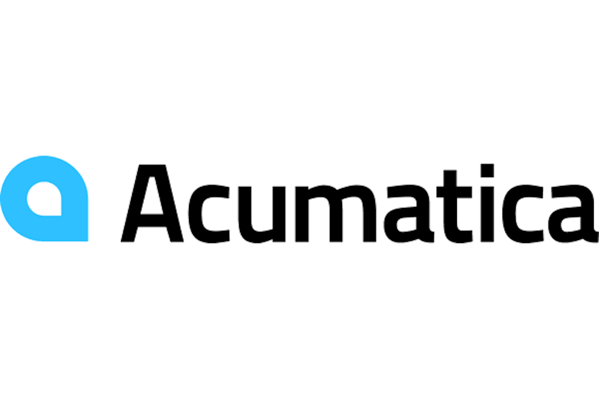
“In my role over the years, I have hired countless speakers to close out large user events and I will
say that Mike is one of the best that I have ever hired. The message he delivers relates to everyone.
Normally when you hire an external speaker to close out an event, there is usually a good size drop-off
of people who are trying to catch a flight out of town. Not in our case. I looked around the room when
Mike started and it was close to being as crowded as day 1 of the event (roughly 1300 people). Also,
afterwards, Mike signed his books for attendees, and we estimate that 500+ were in line to get a book
signed. I would HIGHLY recommend Mike to anyone who needs a closing guest speaker.”
Senior Events Manager, Acumatica
 "Mike was a hit and made everyone's day. His presentation was really well done and set a great, positive
and fun tone for our event. He was an absolute pleasure to work with. We really appreciate all the time
he took to speak and take pictures with our customers. Everyone loved him and his keynote was stellar.
We absolutely loved having him at Zoomtopia.”
"Mike was a hit and made everyone's day. His presentation was really well done and set a great, positive
and fun tone for our event. He was an absolute pleasure to work with. We really appreciate all the time
he took to speak and take pictures with our customers. Everyone loved him and his keynote was stellar.
We absolutely loved having him at Zoomtopia.”
Strategic Events Lead, Zoom
 “We wanted to personally thank you for joining us yesterday. It was truly a pleasure to have you as the
keynote speaker for our inaugural client roundtable event. Your anecdotes and engagement with our
audience was delightful and set an incredibly positive tone for a very enjoyable dinner. We are
sincerely appreciative that you stayed for the entirety of the event and do hope that you enjoyed your
time with us. Thank you also for the personalized books, as we are certain that our attendees will take
pleasure in
reading about your story of resilience in achieving what you had aspired to be at a very young age.
Thank you, Mike, for going above and beyond (it was out of this world!)”
“We wanted to personally thank you for joining us yesterday. It was truly a pleasure to have you as the
keynote speaker for our inaugural client roundtable event. Your anecdotes and engagement with our
audience was delightful and set an incredibly positive tone for a very enjoyable dinner. We are
sincerely appreciative that you stayed for the entirety of the event and do hope that you enjoyed your
time with us. Thank you also for the personalized books, as we are certain that our attendees will take
pleasure in
reading about your story of resilience in achieving what you had aspired to be at a very young age.
Thank you, Mike, for going above and beyond (it was out of this world!)”
Director, Securities Financing Sales, HSBC Securities
“As anticipated, you delivered a talk that was spot on! The comments have all been on how relevant your
content was to our business. Thanks for your prep and tremendous message!”
Manager - Business Development, Terumo Aortic
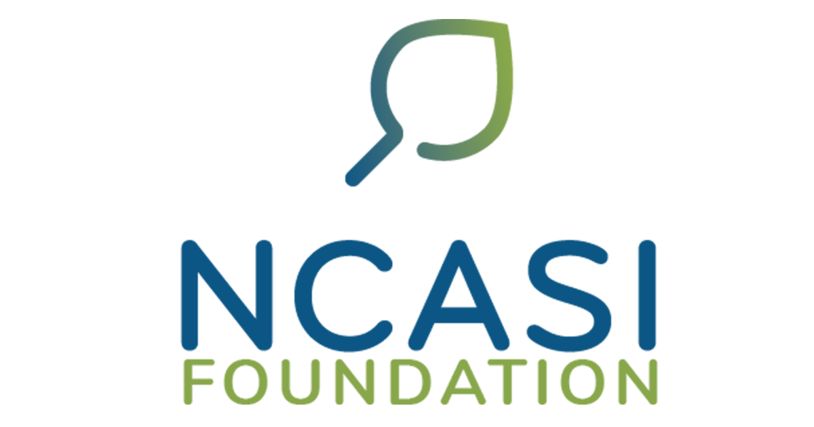
“I sincerely appreciate the obvious thoughtfulness and effort to incorporate all the points we
discussed.
I know this is going to be a big hit at the conference. I can’t think of a better message to close our
meeting. Thanks for putting this together so quickly on what I know was very short notice.”
President, NCASI
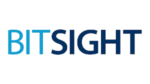
"Your presentation, both informative and engaging, delivered with humility and humor, truly captivated
our employees and sparked thought-provoking discussions among our team members. Your unique perspective
and experiences provided invaluable insights that we believe will help us navigate challenges and
opportunities ahead.
We appreciate the effort you put into preparing and delivering such a compelling presentation, and we
look forward to the possibility of collaborating again in the future.”
CMO, BitSight
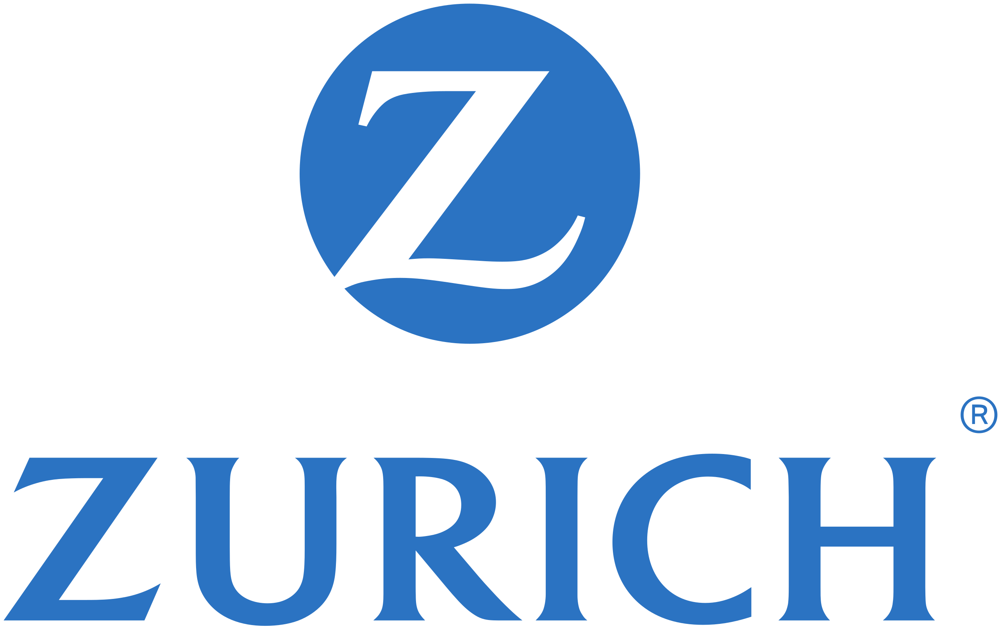
"We can’t thank you enough for your inspiring kick off presentation. You set just the right tone for our
meeting and inspired our guests to create innovative approaches to solving some of our thorniest
business issues. The meeting was a rousing success and you played a big part teeing it up."
Corporate Communications, Zurich